Помогаю бережно разобраться в том, что болит, и найти решение
Артём Ершов, психолог в интегративном подходе. Работаю онлайн со взрослыми с 2015 года: IFS, КПТ, ЭОТ, EMDR.
- 10 лет
- опыт работы с людьми
- 5000+
- часов практики
- Онлайн
- из любой точки мира
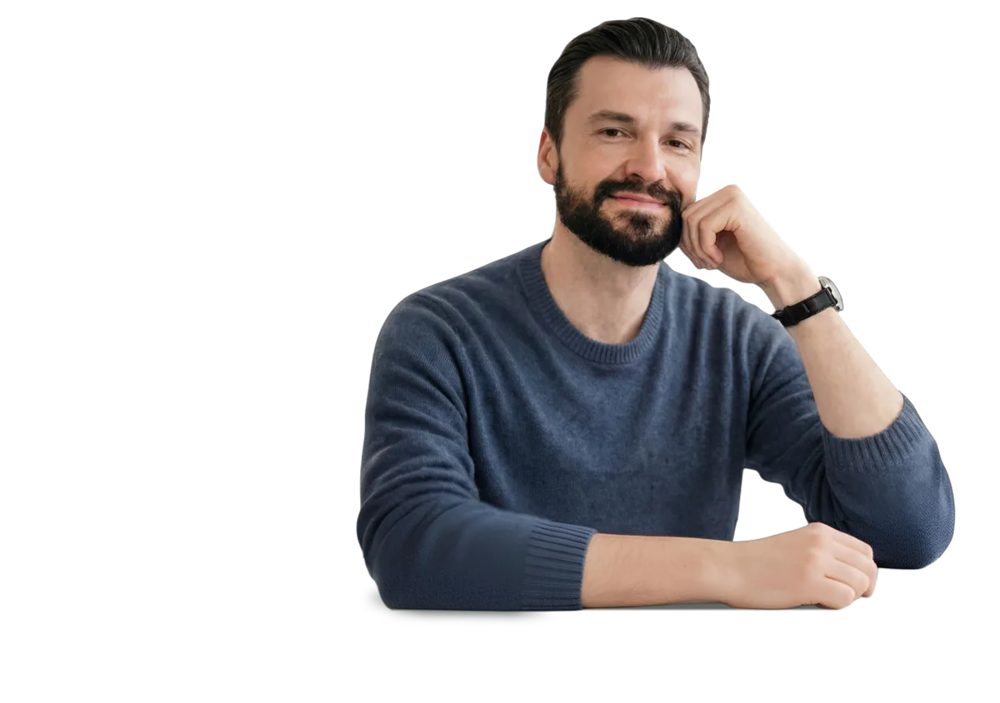
Когда стоит обратиться к психологу
Бывает, что внутри что-то идёт не так, но словами это не сформулировать: постоянное напряжение, усталость, тревога, сложности в отношениях, ощущение тупика или потери опоры. Если вы узнаёте себя в этих состояниях, с этим уже можно работать.
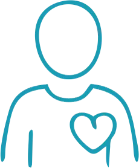
Самооценка
- Постоянно сомневаюсь в себе
- Часто чувствую себя не в своей тарелке
- Как говорить «нет» и отстаивать границы
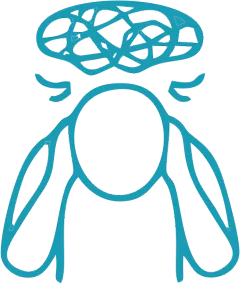
Эмоции
- Меня ничего не радует
- Не могу перестать переживать обо всём
- Постоянная усталость, будто не отдыхаю
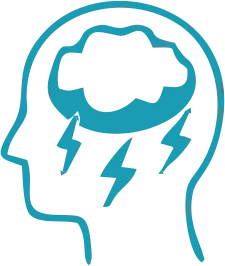
Психосоматика
- Постоянно снятся кошмары
- Не помню, когда высыпалась
- Напряжение, будто вот-вот случится плохое
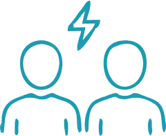
Отношения
- Одиночество даже рядом с человеком
- Боюсь быть собой, чтобы не потерять близкого
- Боюсь подпустить к себе другого
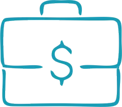
Карьера и деньги
- Перестала радовать работа, выгорание
- Не понимаю, куда двигаться дальше
- Откладываю важное на потом
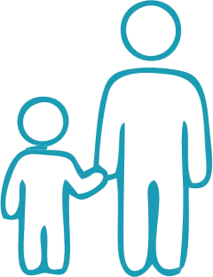
Семья и близкие
- Близкие не воспринимают меня всерьёз
- Не получается говорить без конфликтов
- Мысли о будущем вгоняют в ужас
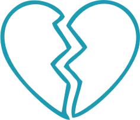
Утрата
- Как жить после смерти близкого
- Не могу пережить развод и расставание
- Внутри пустота и боль
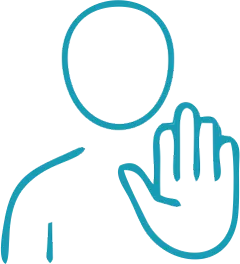
Насилие и границы
- Я не могу это забыть
- Как противостоять бытовому насилию
- Соглашаюсь, хотя внутри всё протестует
С чем я работаю
- Постоянно сравниваешь себя с другими, и почти всегда не в свою пользу
- Есть ощущение «со мной что-то не так», даже при внешних достижениях
- Обесцениваешь свои результаты и быстро забываешь успехи
- Живёшь с внутренним критиком, который не даёт расслабиться
- Чувство, что ты «недостаточно хороший, умный, сильный»
- Трудно доверять себе и своим решениям
- Зависишь от одобрения и боишься разочаровать людей
- Чувство стыда и постоянный самоконтроль
- Тревога, напряжение, ожидание «чего-то плохого»
- Усталость, апатия, нет энергии даже после отдыха
- Подавленные эмоции, которые накапливаются и прорываются
- Постоянное напряжение и жизнь «через надо»
- Эмоциональное выгорание и ощущение пустоты
- Раздражительность, вспышки гнева или слёз без явной причины
- Внутренний хаос, перегруженность мыслями
- Потеря контакта с собой и своими настоящими чувствами
- Созависимость и страх потерять близкого
- Повторяющиеся конфликты и одни и те же сценарии
- Страх близости или, наоборот, страх одиночества
- Трудно говорить о своих потребностях и чувствах
- Постоянное подстраивание под партнёра
- Сложно говорить «нет» и отстаивать свои границы
- Обида, недосказанность, эмоциональная дистанция
- Абьюз, ревность, недоверие, контроль
- Чувство, что тебя не слышат и не понимают
- Сложности после расставаний и разводов
- Потеря себя в отношениях
- Выгорание и потеря смысла в работе
- Страх изменений и шагов в новую сторону
- Прокрастинация и откладывание важных решений
- Сомнения в своей ценности как специалиста, даже при опыте и результатах
- Конфликты с руководством или коллегами
- Трудно зарабатывать больше без внутреннего сопротивления
- Страх проявляться, быть видимым, заявлять о себе
- Нет ясного вектора и чувства «я на своём месте»
- Разрыв между внутренним потенциалом и реальной реализацией
- Панические атаки
- Тревожное расстройство
- Фобии
- Депрессия
- Эмоциональное выгорание
- Обсессивно-компульсивное расстройство (ОКР)
- Навязчивые мысли
- Самоповреждение (селфхарм)
- Зависимости
- Психосоматика
- Нарушения сна
- Посттравматическое расстройство (ПТСР)
- Экзистенциальный кризис
Я работаю со взрослыми. Если ваш запрос лучше решать с другим специалистом, честно скажу об этом и подскажу, к кому обратиться.
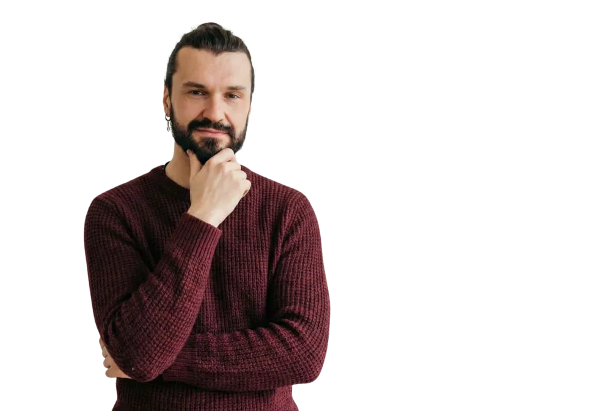
Обо мне
Меня зовут Артём Ершов. Я практикующий психолог, работаю в интегративном подходе. С 2015 года помогаю людям справляться с трудностями в отношениях с собой, с другими и с миром.
Моя профессиональная позиция опирается на теплоту и эмпатию. В работе я выстраиваю отношения, основанные на безопасности, принятии, сочувствии, уважении и бережности, а ещё на ответственности и смелости встречаться с трудностями и болью и в полной мере проживать свою жизнь.
Я создаю условия, в которых вы можете свободно выражать чувства, понять себя и ситуацию и найти решение. Я использую проверенные подходы, поэтому результат получается устойчивым и приходит в короткие сроки.
- IFS — работа с внутренними частями
- КПТ
- ЭОТ — эмоционально-образная терапия
- EMDR
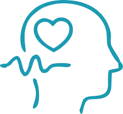
Слышу и понимаю
Внимательно отношусь к переживаниям и помогаю прояснить сложное состояние, не обесценивая чувства и опыт.
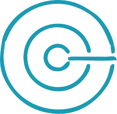
Без шаблонов
Каждую ситуацию рассматриваю с учётом личности, жизненного контекста и того этапа, на котором вы сейчас.
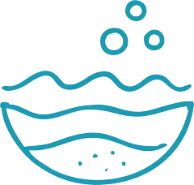
Работаю с причинами
Работа направлена не только на облегчение состояния, но и на понимание глубинных причин происходящего.
- Более 10 лет практики в психологии
- 5000+ часов индивидуальной работы и сопровождения
- Регулярно повышаю квалификацию и углубляю практику
- Прохожу личную терапию и регулярные супервизии
Почему со мной работать спокойно
Здесь можно выдохнуть
Можно говорить всё, что думаете и чувствуете, без страха показаться слабым, глупым или неправильным.
Ваш темп, ваши правила
Моя задача — создать условия, в которых изменения произойдут безопасно и в комфортном для вас ритме.
Причины, а не симптомы
Разберёмся, почему вам плохо, откуда это идёт и что запускает это снова и снова.
Помощь работает и после сессии
То, с чем мы работаем, сразу влияет на жизнь: как вы общаетесь с близкими, реагируете на стресс, принимаете решения.
Мой подход
- Реальность важнее интерпретаций
- Я опираюсь на то, что есть здесь и сейчас, а не на теории ради теорий.
- Фокус на актуальном
- Работа строится вокруг того, что важно сейчас, а не вокруг абстрактных тем.
- В рамках запроса
- Я не увожу процесс «в глубину ради глубины» и не расширяю его без необходимости.
- Без давления
- Изменения не форсируются: они происходят, когда человек к ним готов.
- Человек целиком
- Я смотрю на связь переживаний, мыслей, телесных реакций и жизненного контекста. Важно не отдельное событие, а то, как человек с ним живёт.
- Присутствие и внимание
- Важны не техники сами по себе, а качество контакта и внимание к процессу.
- Профессиональные границы
- Я не даю советов «как жить» и не принимаю решения за клиента.
- Темп и формат
- Работаю онлайн, темп подбирается индивидуально. Так легче сохранять регулярность и спокойный ритм.
Как проходит работа
Знакомство и диагностика
Мы начинаем с диагностической встречи. Вы рассказываете о своей ситуации и чувствуете, комфортно ли вам со мной. Я задаю уточняющие вопросы, помогаю прояснить суть запроса, даже если сейчас он кажется размытым или запутанным, и предлагаю путь решения.
Договорённости
Если предложенный путь вам откликается, фиксируем формат: условия, длительность, стоимость. Сотрудничество оформляем официально, через договор, чтобы у вас было ясное понимание процесса, сроков и безопасности.
Терапевтическая работа
Шаг за шагом исследуем, что стоит за вашей ситуацией: эмоции, внутренние конфликты, прошлый опыт, убеждения и потребности. Выходя на причины, мягко прорабатываем их, снимаем внутреннее напряжение и запускаем реальные изменения.
Отслеживаем прогресс
С помощью профессиональных инструментов и тестов отслеживаем динамику и при необходимости корректируем направление. Каждую сессию я завершаю так, чтобы вы выходили из неё в более устойчивом состоянии, с ощущением опоры и ясности.
Задания между сессиями
По желанию даю индивидуальные задания для самостоятельной работы. Они не обязательны, но по опыту те, кто в них включается, получают результат быстрее и глубже.
Услуги и цены
Все встречи проходят онлайн по видеосвязи. Если важно разобраться в ситуации и получить ясность, подойдёт первая консультация. Если вы готовы к последовательным изменениям, лучше подойдёт пакет сессий.
Первая консультация
Я полностью вникну в вашу ситуацию, помогу понять причины и построю понятный пошаговый путь решения. Заодно вы почувствуете, подходит ли вам мой стиль работы.
ЗаписатьсяКонсультация
Работа с конкретным запросом: проясняем его, выходим на причины и мягко прорабатываем их, снижая внутреннее напряжение. Даже одна сессия помогает вернуть ясность и опору.
ЗаписатьсяШеринг в группе
Учимся замечать, называть и бережно выражать свои чувства. В безопасном пространстве группы можно разделить переживания, снизить стресс и лучше почувствовать связь тела и эмоций.
Узнать датуПакеты сессий
Для тех, кто хочет глубже проработать запрос и закрепить изменения. Работа идёт последовательно, с вниманием к динамике и прогрессу. Онлайн, 60 минут каждая встреча.
действует 2 месяцавыгода 1 000 ₽
действует 3 месяцавыгода 4 000 ₽
действует 5 месяцеввыгода 9 000 ₽
действует 8 месяцеввыгода 24 000 ₽
Отзывы моих клиентов
Истории публикуются без имён и с согласия авторов.
Нужно ли готовиться к консультации?
Специальной подготовки не нужно. Достаточно прийти с тем, что сейчас волнует. Даже если сложно сформулировать проблему словами, мы спокойно разберёмся в процессе.
Для онлайн-сессии проверьте, что интернет стабильный, и что работает один из сервисов видеосвязи: Zoom, Телемост, WhatsApp, VK, Viber.
Сколько сессий нужно для результата?
Всё зависит от запроса. Но уже после первой консультации клиенты отмечают:
- состояние меняется с минуса на плюс;
- уходит душевная и физическая боль;
- появляется понимание своих настоящих желаний и энергия для них;
- возвращается ощущение внутренней опоры;
- уходит состояние борьбы и страдания;
- возвращается способность чувствовать радость и любовь.
Иногда достаточно 1–3 встреч, чтобы снять острое напряжение и увидеть ясность. Для глубоких и устойчивых изменений обычно нужно более длительное сопровождение.
Можно прийти с любым запросом?
Я работаю только со взрослыми и с теми запросами, где могу обеспечить безопасную и качественную помощь. Я не работаю с детьми, подростками и с тяжёлыми психотическими расстройствами. Если ваш запрос относится к этим областям, подскажу, к какому специалисту обратиться.
Онлайн или очно?
Я работаю онлайн. Это удобно и конфиденциально: вы у себя дома или в другом месте, где можно уединиться, и при этом мы создаём общее пространство.
Работает ли онлайн так же, как вживую?
Да. Эффективность онлайн-работы сопоставима с очными встречами и позволяет глубоко прорабатывать запрос, где бы вы ни находились.
Как записаться и оплатить?
Выберите время в онлайн-записи или напишите мне в Telegram. Время бронируется после оплаты, реквизиты я пришлю лично. Если планы изменились, предупредите не позже чем за 24 часа до встречи. За пару минут до начала придёт ссылка на видеозвонок.
Начнём с одной встречи
Расскажете, что происходит, а я помогу понять причины и предложу путь решения. Первая консультация — со скидкой 50%.